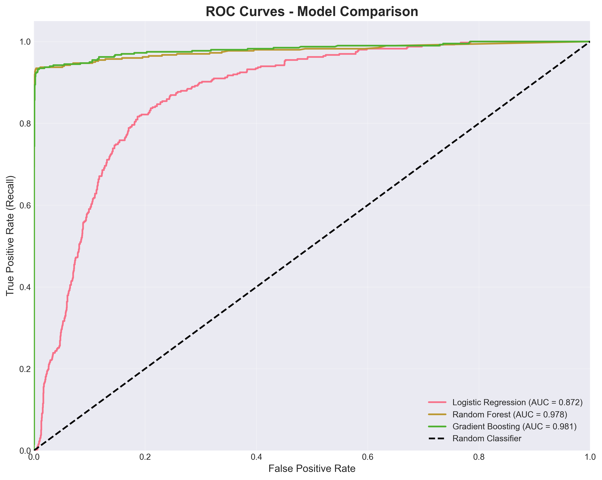
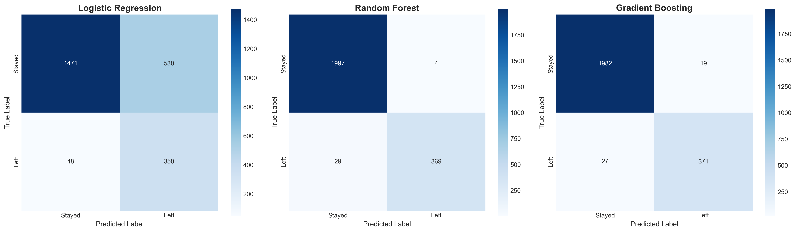
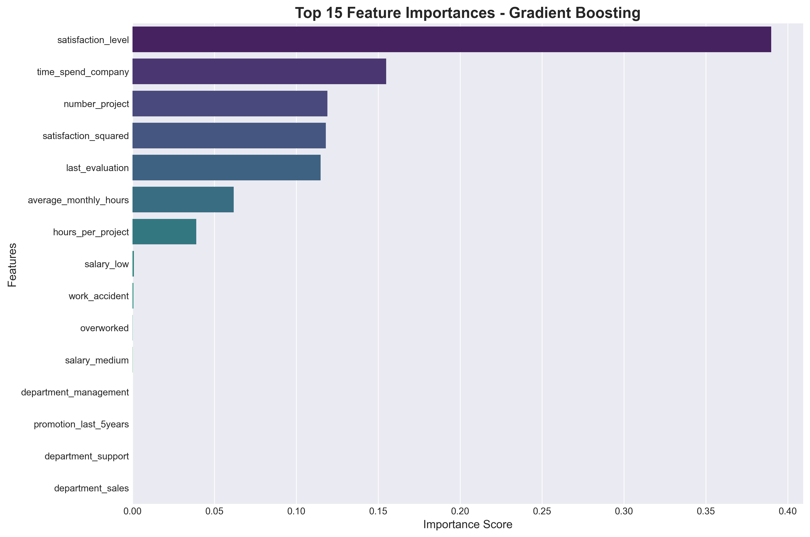

🏆 Winner: Gradient Boosting Model
Best Overall Performance: With 98.1% ROC-AUC score, 95.1% precision, and 93.2% recall, the Gradient Boosting model provides the optimal balance between identifying employees at risk while minimizing false alarms.
Model Performance Comparison
| Model | Accuracy | Precision | Recall | F1-Score | ROC-AUC |
|---|---|---|---|---|---|
| Logistic Regression | 75.9% | 39.8% | 87.9% | 54.8% | 87.2% |
| Random Forest | 98.6% | 98.9% | 92.7% | 95.7% | 97.8% |
| Gradient Boosting BEST | 98.1% | 95.1% | 93.2% | 94.2% | 98.1% |
Key Findings & Insights
Visual Analysis
📈 ROC Curves Comparison
All models show strong discrimination capability with AUC > 0.87. Gradient Boosting achieves the highest AUC of 0.981.
🎯 Confusion Matrices
Visual representation of true positives, true negatives, false positives, and false negatives for each model.
🌳 Random Forest - Feature Importance

Top predictors identified by Random Forest algorithm.
🚀 Gradient Boosting - Feature Importance
Most influential features according to the winning Gradient Boosting model.
Model Selection Rationale
Based on comprehensive evaluation, Gradient Boosting is recommended for production deployment:
📋 Implementation Recommendation
Primary Model: Deploy Gradient Boosting for monthly employee risk scoring
Secondary Model: Use Random Forest as validation - if both models flag high risk, prioritize for immediate intervention
Monitoring: Track model performance quarterly and retrain when drift detected (>5% drop in recall)